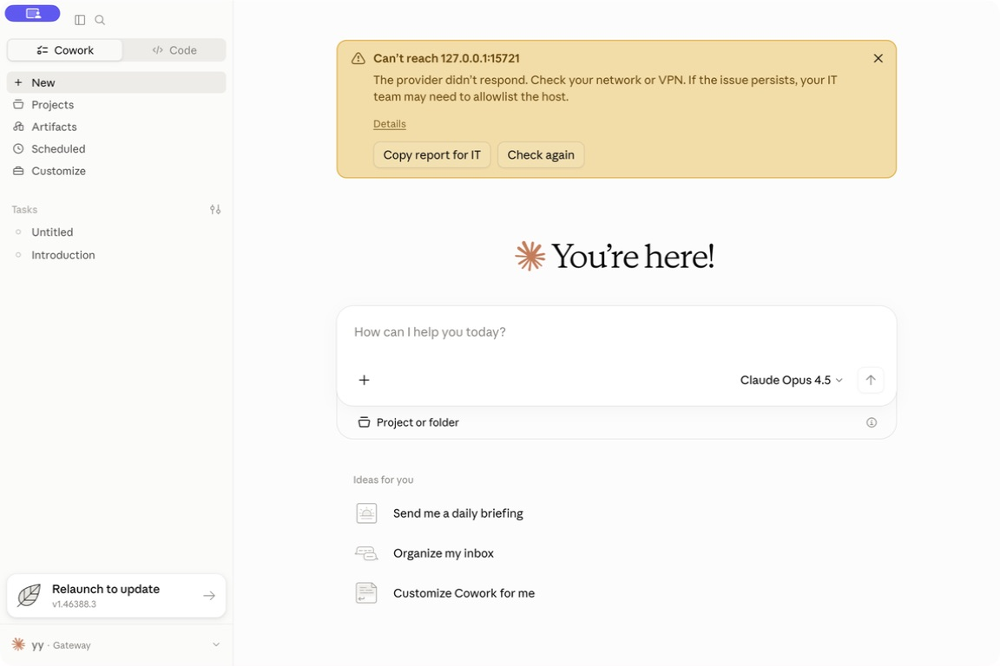

L4 · WorkBuddy Expert CardZ033 · VERIFIED
Curis Implementation

实现：4 列 ~284×128 CSS · avatar32 · 2 行截断 · 3 tags · ver+招募装配动作（Curis-ready/Candidate 语义）
实现：4 列 ~284×128 CSS · avatar32 · 2 行截断 · 3 tags · ver+招募装配动作（Curis-ready/Candidate 语义）

实现：附件=可选择/移除对象；几何未逐值校准、上传过程态未做 → PARTIAL

实现：复制/引用/重新生成/分享有 handler；More 菜单未做 → PARTIAL
实现：右对齐浅紫底（Curis accent token 覆盖）、限宽、内嵌附件卡

实现：组标签 11px 大写、行 32/28、子树缩进、计数徽章；宽 220 服从 Frozen Shell

参考：容器/Add 入口/内联模型菜单（Claude）；Send/Stop/禁用（WorkBuddy）；@/# 与 effective（EvoFlow）
实现：Frozen §3.5 完整槽位状态机（Input/Add/访问权限/工作模式/执行选择 Model≠Agent/Send）